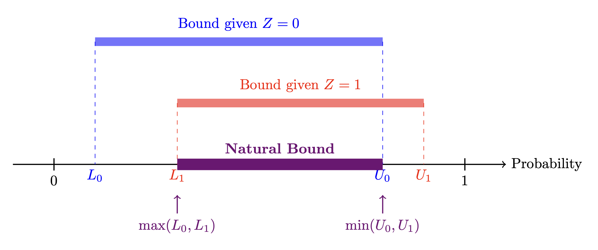

1 개요 (Overview)
지난 포스트에서는 가장 일반적인 형태의 비관측 교란 상황에서 Natural Bounds를 구하는 법을 배웠습니다.
이번에는 인과추론에서 매우 중요한 환경인 도구 변수(Instrumental Variable, IV)가 주어졌을 때, 인과 효과의 범위를 어떻게 더 좁힐 수 있는지 알아봅니다.
특히, 이 문제를 해결하기 위해 Canonical Type Models (CTM)을 도입하고, 이를 선형 계획법(Linear Programming) 문제로 변환하여 최적의 범위(Tight Bounds)를 찾아내는 과정을 다룹니다.
2 불순응(Non-Compliance)과 실험
Task: 관측 데이터 \(P(x, y|z)\)가 주어졌을 때, 인과 효과 \(P(y|do(x))\)의 범위를 구하는 것입니다.
배정된 처치 (\(Z\)): 도구 변수 (Instrumental Variable; IV)
실제 처치 (\(X\)): 실제 피험자가 받은 처치 (Treatment Realized)
주요 결과 (\(Y\)): 결과 변수 (Primary Outcome)
외생 변수 (\(U\)): 비관측 교란 변수 (Exogenous Variables)

2.1 Natural Bounds (IV 모델)
- 관측 분포 \(P(X, Y|Z)\)가 주어졌을 때, 인과 효과 \(P(y|do(x))\)는 구간 \([a(y, x), b(y, x)]\) 안에 존재합니다. 여기서 각 경계값은 다음과 같습니다.
\[ a(y, x) = \max_z P(y, x|z) \] \[ b(y, x) = \min_z [P(y, x|z) + 1 - P(x|z)] \]
- 모델 \(\mathcal{M}_z\)에 Natural Bounds를 적용하면 아래와 같습니다.
- 우선 Natural Bounds 식에서 시작합니다. \[ P(y, x) \le P(y|do(x)) \le P(y, x) + 1 - P(x) \]
- \(do(z)\)를 한 그래프에서도 Natural Bounds는 성립하므로, \[ P(y, x|do(z)) \le P(y|do(x,z)) \le P(y, x|do(z)) + 1 - P(x|do(z)) \]
- Rule 2에 의해 \(Z\)에 대한 개입은 관찰과 같으므로 특정 \(z\)값에 대해 다음 부등식이 성립합니다.
- 추가로 \(X\)에 대한 개입이 이루어진 상황에서 도구변수 \(Z\)가 \(Y\)에 직접적인 영향을 주지 않으므로 \(P(y∣do(x),z)=P(y∣do(x))\) 입니다.
- 어떤 \(z\)값을 택하든 인과 효과는 동일해야 한다는 것입니다. \[ P(y, x|z) \le P(y|do(x)) \le P(y, x|z) + 1 - P(x|z) \]
- 따라서 도구변수 값에 따른 Bounds의 교집합(intersection)이 Natural Bounds가 됩니다.

- 하지만 Natural Bounds는 이론적 한계까지 좁혀지지 않은 상태(Not Tight)입니다.
3 최적화 관점 (Optimization Perspective)
- Natural Bounds를 최적화 관점에서 발전시키면 아래와 같이 정리할 수 있습니다.
3.1 모델 집합 정의 (Model Definition)
주어진 그래프 구조와 호환되는 모든 구조적 인과 모델(SCM)의 집합을 \(\mathbf{M}\)이라고 합시다.
모델 \(\mathscr{M}\)은 다음과 같이 정의됩니다.
\[ \mathscr{M} = \begin{cases} U \sim P(U) \\ Z \leftarrow f_Z(U_Z) \\ X \leftarrow f_X(Z, U) \\ Y \leftarrow f_Y(X, U) \end{cases} \]
3.2 최적화 문제 (Optimization Problem)
- 관측 데이터 \(P(x, y|z)\)가 주어졌을 때, 참(True) 인과 효과 \(P(y|do(x))\)는 다음 최적화 문제로 정의된 구간 \([a(y; x), b(y; x)]\) 내에 존재해야 합니다.
\[ a(y; x) = \min_{\mathscr{M} \in \mathbf{M} \mid P_{\mathscr{M}}(y,x|z) = P(x,y|z)} P_{\mathscr{M}}(y|do(x)) \]
\[ b(y; x) = \max_{\mathscr{M} \in \mathbf{M} \mid P_{\mathscr{M}}(y,x|z) = P(x,y|z)} P_{\mathscr{M}}(y|do(x)) \]
\(\mathscr{M} \in \mathbf{M} \mid P_{\mathscr{M}}(y,x|z) = P(x,y|z)\)는 가상 모델(\(\mathscr{M}\)) 중, 그 모델이 만들어내는 통계(\(P_{\mathscr{M}}\))가 실제 관측된 데이터(\(P\))와 정확히 일치하는 모델만을 고려함을 의미합니다.
Difficulty: 이 최적화 문제를 해결하는 것은 다음과 같은 이유로 어렵습니다.
- 함수 집합 \(\mathbf{F}\) (\(f_X, f_Y\) 등)의 모수적 형태(parametric form)가 주어지지 않았습니다.
- 잠재 변수의 분포 \(P(U)\)를 알 수 없습니다.
4 Canonical Type Models (CTM)
- 인과 효과의 범위를 최적화 문제로 풀기 위해, 우리는 Canonical Type Model이라는 개념을 도입합니다.
- 핵심 아이디어는 비관측 변수 \(U\)의 공간을 변수들의 반응 패턴(Response Pattern)에 따라 유한한 개수의 파티션으로 나누는 것입니다.
4.1 반응 변수 (Response Variables)
- 변수 \(X\)와 \(Y\)가 부모 변수의 값에 따라 어떻게 반응하는지를 결정하는 잠재적 특성을 \(R_X, R_Y\)라고 정의합시다.
4.1.1 \(R_X\): 배정(\(Z\))에 대한 순응 유형
\(Z\)가 \(0\) 또는 \(1\)일 때, \(X\)가 어떻게 반응하는지에 따라 총 4가지 유형(\(2^2\))이 존재합니다.
- Never-taker (\(R_X=0\)): 배정과 상관없이 처치를 받지 않음 (\(Z=0 \to X=0, Z=1 \to X=0\))
- Complier (\(R_X=1\)): 배정된 대로 따름 (\(Z=0 \to X=0, Z=1 \to X=1\))
- Defier (\(R_X=2\)): 배정과 반대로 행동함 (\(Z=0 \to X=1, Z=1 \to X=0\))
- Always-taker (\(R_X=3\)): 배정과 상관없이 무조건 처치를 받음 (\(Z=0 \to X=1, Z=1 \to X=1\))
4.1.2 \(R_Y\): 처치(\(X\))에 대한 반응 유형
마찬가지로 \(X\)가 \(0\) 또는 \(1\)일 때, 결과 \(Y\)가 어떻게 나오는지에 따라 4가지 유형이 있습니다.
- Never-recover (\(R_Y=0\)): 약을 먹든 안 먹든 낫지 않음.
- Helped (\(R_Y=1\)): 약을 먹으면 낫고, 안 먹으면 안 나음 (인과 효과 있음).
- Hurt (\(R_Y=2\)): 약을 먹으면 오히려 아프고, 안 먹어야 나음.
- Always-recover (\(R_Y=3\)): 약을 먹든 안 먹든 항상 나음.

- Note: \(U\)는 \(R_X\)(4가지)와 \(R_Y\)(4가지)의 조합인 총 16개의 영역으로 나뉩니다.*
4.1.3 동치 정리 (Equivalence Theorem)

Theorem: 모든 IV 모델은 그에 상응하는 Canonical Type Model로 변환될 수 있으며, 동일한 관측 분포와 인과 효과를 가집니다.
For any IV model \(\mathscr{M}_{1}\), there exists a canonical type model \(\mathscr{M}_{2}\) such that \(P_{\mathscr{M}_{1}}(x,y|z) = P_{\mathscr{M}_{2}}(x,y|z)\), \(P_{\mathscr{M}_{1}}(y|do(x)) = P_{\mathscr{M}_{2}}(y|do(x))\)
- 이 정리는 우리가 복잡하고 무한한 형태의 \(U\)를 고려할 필요 없이, 유한한 16개의 파라미터(\(R_X, R_Y\)의 결합 분포)만 최적화하면 된다는 것을 보장합니다.
5 선형 계획법 (Linear Programming) 수립
- 이제 문제를 수학적인 최적화 문제, 특히 선형 계획법(Linear Programming, LP)으로 바꿔봅시다.
5.1 파라미터 정의 (\((R_{x}, R_{y}) \rightarrow q_{j, k}\))
- 우리가 찾아야 할 미지수는 \(R_X\)와 \(R_Y\)의 결합 확률분포입니다.
\[ q_{j,k} = P(R_X=j, R_Y=k), \quad j,k \in \{0,1,2,3\} \]
- 총 16개의 \(q_{j,k}\)가 있으며, 이들의 합은 1이어야 합니다.
\[ \sum_{j} \sum_{k} q_{j,k} = 1 \]
5.2 관측 데이터와의 연결 (\(q_{jk} \rightarrow P(X = x, Y = y | Z = z)\))
관측된 데이터 \(P_{yx.z} = P(X=x, Y=y | Z=z)\)는 \(q_{j,k}\)들의 선형 결합으로 표현됩니다.
예를 들어, \(P(Y=0, X=0 | Z=0)\)인 경우를 봅시다.
- \(Z=0\)일 때 \(X=0\)이 되려면: Never-taker(\(R_{x}=0\)) 또는 Complier(\(R_{x}=1\))여야 합니다.
- \(X=0\)일 때 \(Y=0\)이 되려면: 처치를 안 받았을 때 안 나아야 하므로 Never-recover(\(R_{y}=0\)) 또는 Helped(\(R_{y}=1\))여야 합니다.
따라서 해당 \(q_{j,k}\)들을 모두 더하면: \[ P_{00.0} = q_{00} + q_{01} + q_{10} + q_{11} \]
이와 같은 방식으로 8개의 관측 확률(\(P_{yx.z}\))을 모두 \(q\)에 대한 선형 방정식으로 만들 수 있습니다.
5.3 인과 효과 (\(q_{j, k} \rightarrow P(Y | do(x))\))
- 우리가 알고 싶은 인과 효과 \(P(Y=1 | do(X=1))\) 또한 \(q_{j,k}\)의 합으로 표현됩니다.
\[ \begin{aligned} P(Y=1 | do(X=1)) &= P(R_Y \in \{\text{Helped, Always-recover}\}) \\ &= P(R_Y=1) + P(R_Y=3) \\ &= \sum_{j=0}^3 (q_{j1} + q_{j3}) \end{aligned} \]
- \(do(x)\)의 의미
- \(do(X=x)\)는 \(R_X\)의 성향을 무시하고(무력화하고) 강제로 처치를 가하는 것입니다.
- 따라서 인과 효과를 계산할 때는 \(R_X\)에 대한 조건 없이, 오직 \(Y\)가 처치 \(x\)에 어떻게 반응하는지(\(R_Y\))만 고려하면 됩니다.
5.4 해결 및 결과
- Canonical Type Model을 도입함으로써, 우리는 무한한 차원의 문제를 16개의 변수(\(q_{j,k}\))를 가진 선형 계획법(Linear Programming) 문제로 변환했습니다.
- 이를 구체적인 수식으로 살펴보겠습니다.
5.4.1 최적화 문제 정의 (Optimization Setup)
- 목표: 관측 데이터(\(P\))와 확률의 공리(\(\sum q = 1, q \ge 0\))를 만족하면서, 인과 효과를 최소화/최대화하는 \(q\)의 조합을 찾는 것입니다.
5.4.1.1 목적 함수 (Objective Function):
- 예를 들어, \(P(Y=1 | do(X=0))\)의 범위를 구한다고 가정해 봅시다.
- \(X=0\)으로 처치를 고정했을 때 \(Y=1\)이 나오는 반응 유형은 Hurt(\(R_{y}=2\))와 Always-recover(\(R_{y}=3\))입니다.
- 따라서 목적 함수는 다음과 같습니다.
\[ \min_\mathbf{q} \sum_{j=0}^3 (q_{j2} + q_{j3}) \quad \text{또는} \quad \max_\mathbf{q} \sum_{j=0}^3 (q_{j2} + q_{j3}) \]
5.4.1.2 제약 조건 (Constraints):
- 관측확률에 대한 선형 등식: \[ \begin{aligned} p_{00.0} &= q_{00} + q_{01} + q_{10} + q_{11} \\ p_{00.1} &= q_{00} + q_{01} + q_{20} + q_{21} \\ &\vdots \\ p_{11.1} &= q_{12} + q_{13} + q_{32} + q_{33} \end{aligned} \]
- 확률의 공리: \(\sum_{j,k} q_{j,k} = 1\), \(q_{j,k} \ge 0\)
5.4.1.3 Closed-form Solution
- 이 선형 계획법 문제를 심플렉스 알고리즘 등으로 풀면, Closed-form Solution를 얻을 수 있습니다.
- 인과 효과 \(P(Y=1 | do(X=0))\)의 하한(Lower Bound)은 다음 값들 중 최댓값(\(\max\))으로 결정됩니다.
\[ P(Y=1 | do(X=0)) \ge \max \begin{cases} p_{10.0} \\ p_{10.1} \\ p_{10.0} + p_{11.0} - p_{00.1} - p_{11.1} \\ p_{01.0} + p_{10.0} - p_{00.1} - p_{01.1} \\ \end{cases} \]
\[ P(Y=1 | do(X=0)) \le \min \begin{cases} 1 - p_{00.0} \\ 1 - p_{00.1} \\ p_{10.0} + p_{11.0} + p_{01.1} + p_{10.1} \\ p_{01.0} + p_{10.0} + p_{10.1} + p_{11.1} \\ \end{cases} \]
5.4.2 결과의 의미
위 수식은 복잡해 보이지만 중요한 함의를 갖습니다.
- 데이터만으로 계산 가능: 우변의 모든 항(\(p_{yx.z}\))은 관측 데이터로부터 바로 구할 수 있는 값들입니다.
- Tightness: 이 범위는 IV 모델의 가정(\(Z \perp U\) 등)을 수학적으로 완벽하게 반영한 결과입니다. 따라서 추가적인 가정이 없다면 이보다 더 좁은 범위를 찾는 것은 불가능합니다.
Note: Natural Bounds는 단순히 관측된 확률의 교집합만 고려하지만, Balke-Pearl Bounds(LP)는 도구 변수의 구조적 정보를 최적화 과정에 반영하여 훨씬 더 정보가 풍부한(Informative) 결과를 제공합니다.*
6 결론
부분 식별(Partial Identification) 문제는 데이터만으로 인과 효과를 하나로 특정할 수 없을 때 매우 유용합니다.
- Natural Bounds는 가장 보수적인 구간을 제공하지만 넓을 수 있습니다.
- 도구 변수(IV)가 있다면, Canonical Type Model을 통해 비관측 변수를 유한한 유형으로 나눌 수 있습니다.
- 이를 선형 계획법(LP)으로 구성하여 풀면, 주어진 데이터와 가정하에서 얻을 수 있는 가장 정밀한 인과 효과의 범위(Tight Bounds)를 계산할 수 있습니다.
이 접근법은 실제 임상 실험이나 정책 분석에서 불순응자가 발생했을 때, 처치 효과의 최악/최선 시나리오를 분석하는 데 강력한 도구로 사용됩니다.